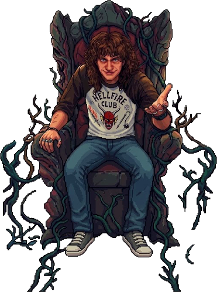
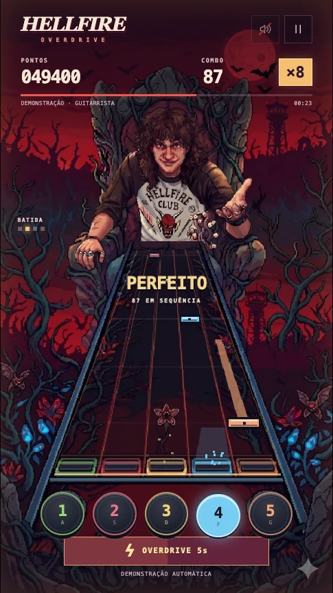

01 · O jogo
Cinco pistas, uma linha, nenhum lugar para se esconder.
As notas descem pelo braço da guitarra e o acerto é na linha iluminada. Notas com cauda pedem para segurar; na dificuldade Lenda, acordes chegam juntos exigindo múltiplos toques. A música segue até o fim sem interrupção mesmo com erros. Toque aqui no palco interativo ou abra a versão completa em tela cheia.
Recriação jogável · elementos do PSD

COMO JOGAR
Acerte as notas na linha iluminada. Use A S D F G ou toque nas pistas.
Encha a bateria com os acertos. Aperte Espaço ou toque no medidor para ativar o Overdrive por 8 segundos.
Esc ou P pausa. Na demonstração, o primeiro toque ou tecla assume o controle.
PLACARES
Nesta visita
Suas partidas aparecem aqui. Demonstrações não contam.
PAUSA
Sessão encerrada
A
Pontuação
AJUSTES
De fone Bluetooth? Se o som chega depois das notas, aumente a sincronia.
- Tocar
- A S D F G no teclado. No celular, toque na pista ou no pad.
- Multiplicador
- Sobe a cada 10 acertos seguidos, até ×4. Um erro zera o combo.
- Overdrive
- Com a bateria cheia, aperte Espaço ou toque no medidor: pontos em dobro por 8 segundos.
- Brinde
- Rank A (88% de precisão) ou S (97%) mostra o código. A demonstração joga sozinha, passa o controle no primeiro toque e nunca libera o código.
- Pausa
- Esc ou P. O jogo também pausa ao sair da tela.
Capturas reais · modo demonstração

